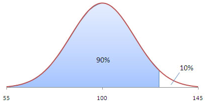
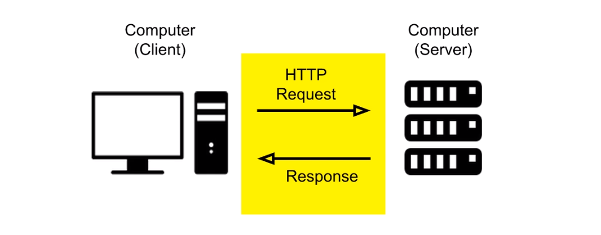
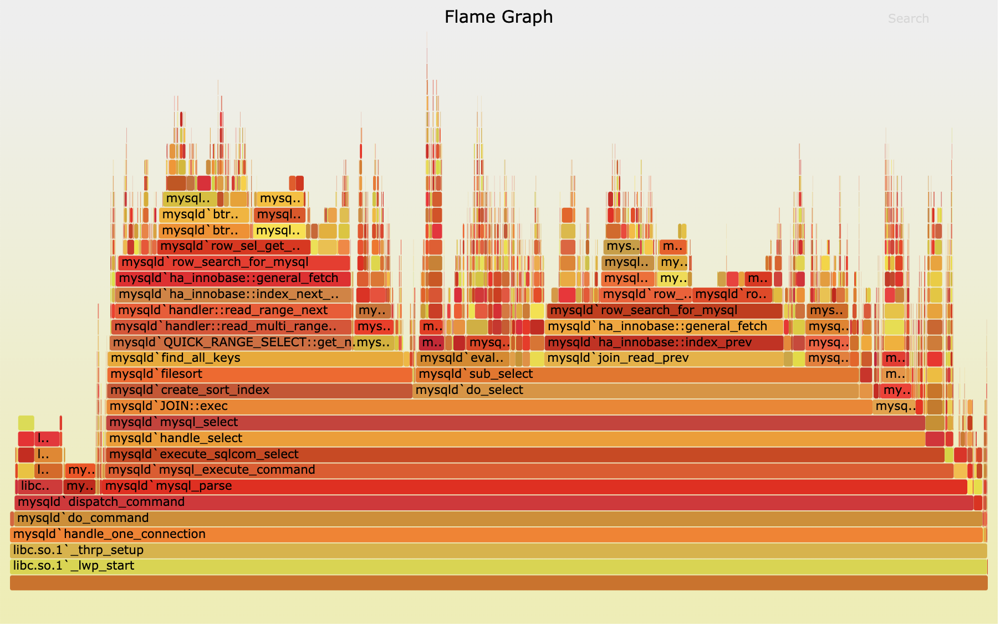

（笔记迁移 @ 2020年）
一、概念，最基础最重要
1. 响应时间 TP99, TP90是什么
除了要看TPS，也要看请求的响应时间是否在合理的范围内。太离谱，压测该停了。
响应时间的指标有最大响应时间、平均响应时间、TPXXX等。

TP – Top Percentile
TP90 = 500ms ：90%的请求都是在500ms以内。
2. 错误率
压测过程中发现异常或是错误，或者，错误率明显上升，这时候压测就该停了。
3. 吞吐量 TPS
单纯看TPS是没有意义的。要结合上述两个指标，一般是0错误率，TP99在xxx ms（看具体应用场景）内的TPS。
比如这么描述TPS，TP99小于100ms的前提下，系统没有错误，系统可承载的TPS是1000。
4. 压测案例
选择生产环境中并发要求高的请求。
二、工具选型，选最合适的
工具的选择，一要看场景，二要看自己是否趁手。
ab (apache benchmark)
ab -kc 1000 -n 10000 http://www.some-site.cc/tmp/index.html
- -k Enables HTTP keep-alive
- -c Number of concurrent requests
- -n Number of total requests to make
不足：
- 只能使用单核。本身就可能是压测的瓶颈。
- 对于带多个步骤的压测场景无力。
- 没有（没找到）自定义断言的能力。
reference: https://en.wikipedia.org/wiki/ApacheBench
wrk
wrk小巧，性能非常好，报告直观。
wrk -t2 -c100 -d30s -R2000 http://127.0.0.1:8080/index.html
- -d30s: 压测时间30s
- -t2: 2个线程
- -c100: 100个"用户数"
- -R2000: constant throughput of 2000 requests per second
不足：
- 对于带多个步骤的压测场景无力。lua脚本写的很费劲。
reference: https://github.com/giltene/wrk2
jmeter
框架功能强大。个人感觉太重了，全是界面的配置。
locust
- 使用python脚本编写案例。脚本化，方便peer review。
- 大并发的支持：因为python本身对多核的利用不够好，提高并发量的办法是多起几个进程作为slave。
- 统计能力满足需求。
reference: https://locust.io/
三、实战中的经验
TPS压不上去怎么办。看下请求的链路，从源头开始排查瓶颈。
压测源 -> （对外）网络 -> 负载均衡 -> 内部网络 -> 应用服务器 -> 数据库、共享内存
压测源
一次http请求，客户端也是占用资源的。请求的构造与发送、返回结果的接收与解析。

根据你选用的压测框架找下瓶颈。
举例：
- jmeter线程数是否不够了
- locust的slave进程是否都已占用100%的CPU。
网络
一般内部网络不会是瓶颈。 对外网络因为带宽费用问题，手头拮据点的会使用1M带宽。再怎么测试，压的都是网络的瓶颈。
建议把压力源放到内部网络内，再测试。
应用服务器
服务器的指标有这么几项：
- CPU
- 内存
- 磁盘IO
- 网络IO
查看的方式：
- 简单粗暴，登录服务器敲命令
htop等 - 插件取数据
- 阿里云监控，如果是阿里云机器
四、golang应用监控（开发篇）
开发者角度分析并发瓶颈
自己写的代码已经忘了，或是别人的代码不了解，建议通过阅读代码画出时序图。
pprof火焰图，查看CPU耗时、内存占用
最新版本的pprof已经支持了火焰图。

火焰图的y轴表示cpu调用方法的先后，x轴表示在每个采样调用时间内，方法所占的时间百分比，越宽代表占据cpu时间越多。
1. 安装最新版的pprof
go get -u github.com/google/pprof
pprof具体路径为 $GOPATH/bin/pprof
2. 数据采用代码引用
web应用，通过http接口的方式获得采样数据（非web应用也建议这么做，接口比较high level）。
// pprof
go func() {
r := http.NewServeMux()
// Register pprof handlers
r.HandleFunc("/debug/pprof/", pprof.Index)
r.HandleFunc("/debug/pprof/cmdline", pprof.Cmdline)
r.HandleFunc("/debug/pprof/profile", pprof.Profile)
r.HandleFunc("/debug/pprof/symbol", pprof.Symbol)
r.HandleFunc("/debug/pprof/trace", pprof.Trace)
http.ListenAndServe(":8000", r)
}()
3. 打开管理工具
-- CPU
$GOPATH/bin/pprof -http=:9000 coupon http://localhost:8000/debug/pprof/profile
-- Memory
$GOPATH/bin/pprof -http=:9000 coupon http://localhost:8000/debug/pprof/heap
中间的coupon是二进制文件。用于取symbol。发布的时候留一份copy。
4. 总结
go build -o 'coupon'
./coupon > coupon.log &
$GOPATH/bin/pprof -http=:9000 coupon http://localhost:8000/debug/pprof/profile
reference
- http://artem.krylysov.com/blog/2017/03/13/profiling-and-optimizing-go-web-applications/
- https://github.com/google/pprof/blob/master/doc/pprof.md
参考
- 性能测试应该怎么做？ https://coolshell.cn/articles/17381.html
Last modified on 2018-10-17